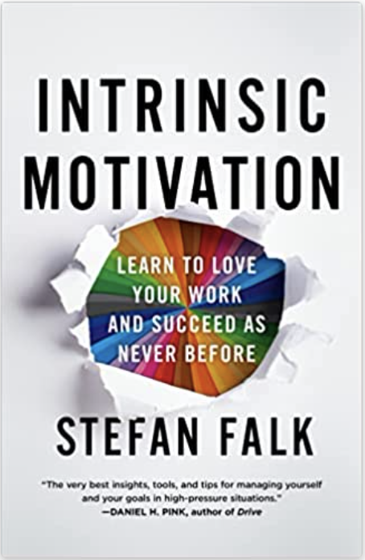
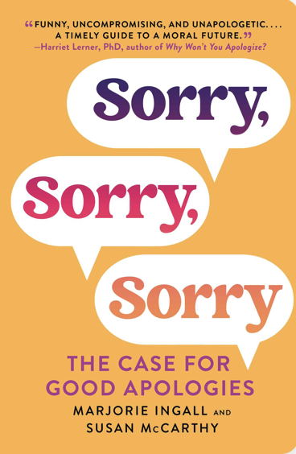

The Book Reviewer's Hub
|  |
WIntrinsic motivation—doing a thing for its inherent satisfaction rather than external rewards—is the key to success and satisfaction in any endeavor. A legendary performance coach shares his simple, proven, and fun methods for cultivating and keeping it. Genres Self Help Business Personal Development Psychology Nonfiction |
 |
It’s a truth universally acknowledged that terrible apologies are the worst We’ve all been on the receiving end, and oh, how they make us seethe. Horrible public apologies—excuse-laden, victim blame-y, weaselly statements—often go viral instantaneously... Genres Nonfiction Self Help Mental Health Psychology Audiobook Linguistics |
|
Many of us feel trapped in a grind of constant change: rolling news cycles, the chatter of social media, our families split along partisan lines. We feel fearful and tired, on edge in our bodies, not quite knowing what has us perpetually depleted. For Katherine May... Genres Nonfiction Self Help Memoir Nature Psychology Spirituality Essays |
Awe is mysterious. How do we begin to quantify the goose bumps we feel when we see the Grand Canyon, or the utter amazement when we watch a child walk for the first time? How do you put into words the collective effervescence of standing in a crowd and singing in unison, or the wonder you feel while gazing at centuries-old works of art?... Genres Nonfiction Psychology Science Self Help Nature Audiobook Health |